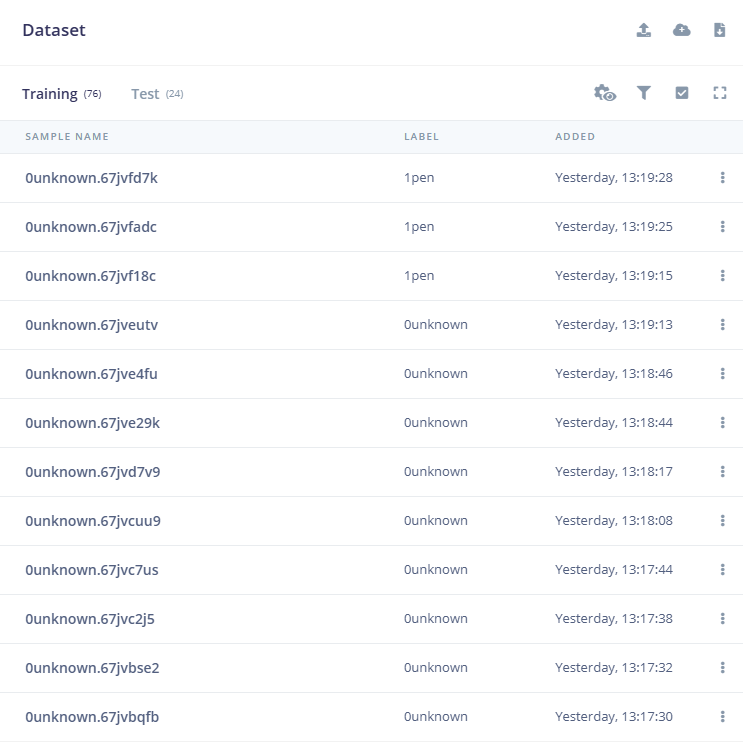
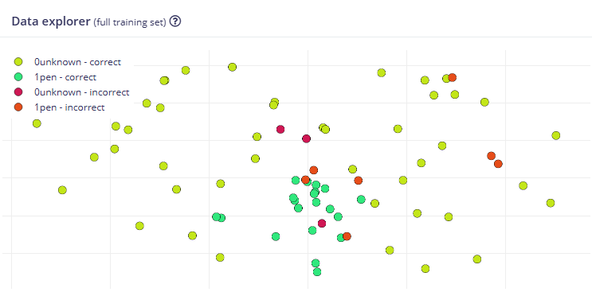
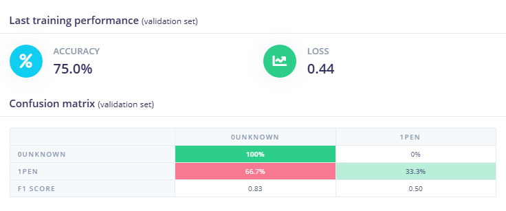
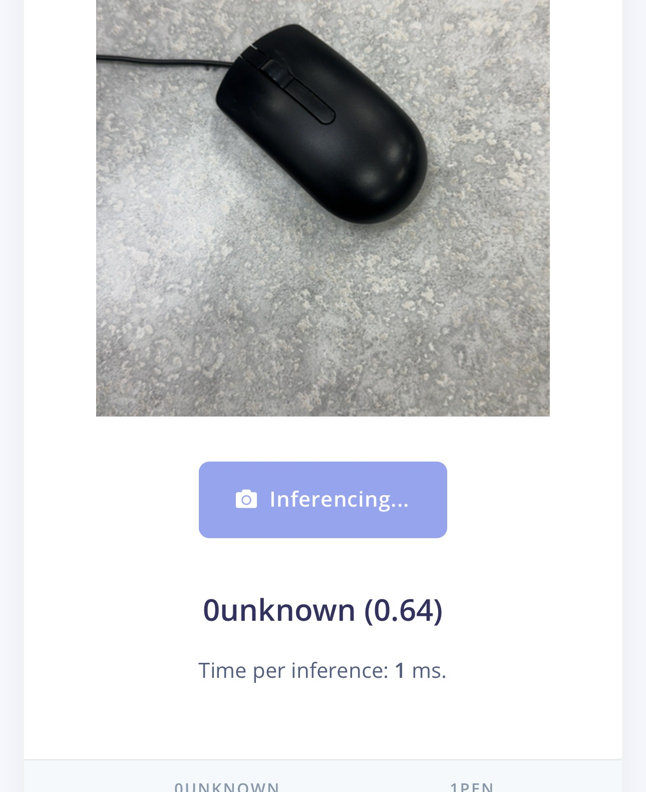
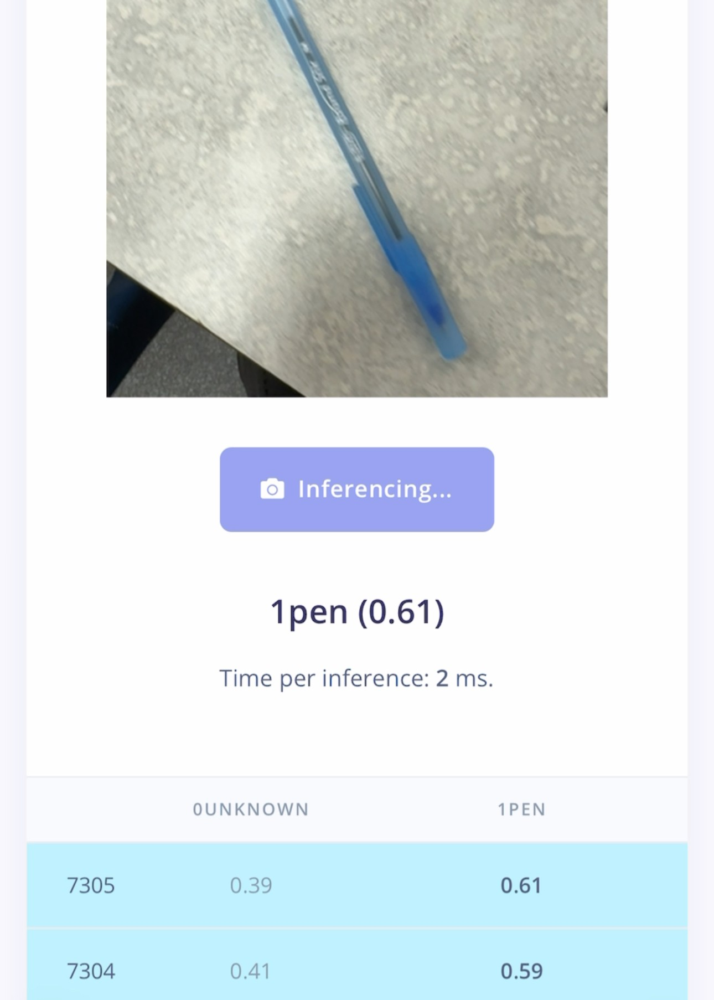

t1a10-AI-edgeimpulse-Aurvaan
Tried making a classification model on
Your job if assigned for other webpages is to make other models with your cell phone or a computer
with a webcam.
Visual classification - Done
Wake word (sound)
Motion (Movement x, y, z)
Visual Object Dectection FOMO
Visual Regression
Visual Anaomoly
Data Entry

Data Totals
Data Explorer

Confusion Matrix

Unknown Correct

Pen Correct
